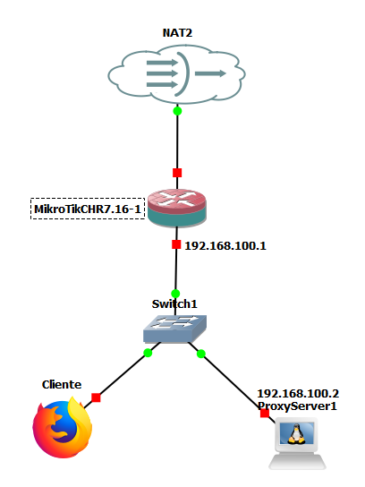

Práctica 9.1: Servidor Proxy-Caché, Control de Acceso y Filtrado Web con Squid en Linux
Datos de la Práctica
- Módulo: Seguridad y Alta Disponibilidad (SAD - 0378)
- Unidad Didáctica: UD9 - Protección perimetral mediante Servidores Proxy
- Entorno de trabajo: Emulador de red GNS3 con las siguientes máquinas y appliances:
- Servidor Proxy Linux Debian (
ProxyServer): Máquina con dos interfaces de red (eth0conectada a la nube NAT de Internet yeth1conectada a la red interna corporativa). - Cliente gráfico (
Cliente-LAN): Appliance Firefox (o Webterm / Debian con entorno gráfico) conectado a la red interna para auditar la navegación a través del proxy. - Switch Ethernet básico y Nube NAT (Internet) de GNS3.
- Servidor Proxy Linux Debian (
1. Objetivos
- Desplegar y poner en funcionamiento un servidor proxy directo Squid sobre Debian GNU/Linux en un entorno de red emulado en GNS3.
- Configurar la arquitectura de proxy-caché en disco y memoria RAM, inicializando la estructura jerárquica de almacenamiento con
squid -z. - Implementar el subsistema de autenticación básica HTTP (
basic_ncsa_auth) utilizando contraseñas cifradas en/etc/squid/passwdcon la herramientahtpasswd. - Dominar la sintaxis y el orden de evaluación secuencial de las Listas de Control de Acceso (ACLs) y directivas
http_access. - Resolver el reto de filtrado corporativo de la unidad:
- Permitir acceso autenticado exclusivamente a determinados subdominios de Google (
drive.google.comycalendar.google.com). - Bloquear cualquier otro subdominio de Google (
maps.google.com,mail.google.com, etc.). - Permitir el resto de Internet de forma autenticada y denegar todo tráfico no autenticado.
- Permitir acceso autenticado exclusivamente a determinados subdominios de Google (
- Auditar el funcionamiento del proxy en tiempo real a través del archivo de registro
/var/log/squid/access.log, analizando los estados de caché (TCP_HIT,TCP_MISS) y códigos de denegación (TCP_DENIED). - Gestionar la transferencia de los archivos de configuración (
squid.confypasswd) mediantescppara su evaluación docente.
2. Escenario y Topología en GNS3
El laboratorio modela la salida a Internet de una red corporativa a través de un servidor proxy intermediario según el siguiente esquema:

Tabla de Direccionamiento IP del Laboratorio
| Nodo / Dispositivo | Interfaz | Dirección IP | Máscara | Puerta de Enlace (GW) | Rol en la Práctica |
|---|---|---|---|---|---|
| ProxyServer (Debian) | eth0 (WAN) |
Dinámica DHCP | /24 |
virbr0 (192.168.122.1) |
Conexión externa a Internet para descargar recursos. |
| ProxyServer (Debian) | eth1 (LAN) |
192.168.100.1 |
/24 |
-- | IP de escucha del servicio proxy (puerto TCP 3128). |
| Cliente-LAN (Firefox) | eth0 |
192.168.100.2 |
/24 |
192.168.100.1 |
Equipo cliente que navega configurando el proxy. |
3. Desarrollo Paso a Paso de la Práctica
Fase 1: Despliegue de la Red y Conectividad Base
-
Montaje en GNS3:
- Inicia GNS3 y crea el proyecto
SAD_P9_1_Proxy_Squid. - Añade un nodo Debian (
ProxyServer), un switch Ethernet, un nodo Firefox (o Webterm) y una Nube NAT. - Conecta la interfaz
eth0del Debian a la Nube NAT y su interfazeth1al switch interno. - Conecta el nodo Firefox al switch interno.
- Inicia GNS3 y crea el proyecto
-
Configuración de Interfaces en ProxyServer (Debian):
- Inicia la máquina Debian y abre su consola.
- Configura
/etc/network/interfaces: - Reinicia el subsistema de red:
- Comprueba que tienes conectividad externa haciendo ping a Internet (
ping 8.8.8.8oping debian.org).
-
Configuración de Red en el Cliente Firefox:
- En el nodo Firefox, asigna la IP estática
192.168.100.2/24con gateway192.168.100.1. - Comprueba que alcanzas al servidor proxy ejecutando:
- En el nodo Firefox, asigna la IP estática
Fase 2: Instalación y Configuración del Proxy Caché (Squid)
Vídeo de Apoyo: Proxy Caché con Squid
Puedes seguir la explicación en vídeo en el siguiente recurso del curso:
-
Instalación de Paquetes en ProxyServer:
- En Debian el paquete actual se denomina
squid(en distribuciones antiguas se llamabasquid3, pero su configuración es prácticamente idéntica):
- En Debian el paquete actual se denomina
-
Resguardo de la Configuración Original:
- Antes de realizar modificaciones, crea una copia de seguridad del archivo maestro:
-
Configuración de los Parámetros de Caché:
- Abre el archivo
/etc/squid/squid.confcon tu editor preferido (nano /etc/squid/squid.conf). - Localiza o añade las siguientes directivas fundamentales de almacenamiento y puerto:
# Puerto de escucha del proxy (por defecto TCP 3128) http_port 3128 # Memoria RAM dedicada a objetos en caché reciente cache_mem 64 MB # Tamaño máximo de un objeto individual almacenable en caché maximum_object_size 4096 KB # Estructura del directorio de caché en disco: # Formato: cache_dir <tipo> <ruta> <tamaño_MB> <L1_directorios> <L2_directorios> cache_dir ufs /var/spool/squid 100 16 256 - Abre el archivo
-
Inicialización de los Directorios de la Caché:
Aviso Docente Crítico (Minutos 10:45 y 12:35 del vídeo)
Antes de arrancar Squid con la directiva
cache_diractivada, es obligatorio detener el servicio e inicializar la estructura jerárquica de subdirectorios en el disco duro. Ejecuta la siguiente secuencia exacta:- Comprueba que el servicio está activo y sin errores:
-
Configuración del Navegador en el Cliente Firefox:
- En la máquina Firefox, abre el navegador y ve a:
- Ajustes (Settings) → General → Ajustes de red (Network Settings) → Configuración (Settings...)
- Selecciona Configuración manual del proxy (Manual proxy configuration):
- Proxy HTTP:
192.168.100.1| Puerto:3128 - Marca la casilla: Usar este proxy también para HTTPS (Also use this proxy for HTTPS).
- Proxy HTTP:
- Guarda los cambios pulsando Aceptar.
- En la máquina Firefox, abre el navegador y ve a:
-
Auditoría de la Caché:
- En el servidor Debian, abre una segunda terminal para monitorizar las peticiones en vivo:
- En el navegador Firefox, visita una página web HTTP estática.
- La primera vez que cargues la página, observarás en el log el código
TCP_MISS(el proxy descarga el objeto de Internet). - Si recargas la página (F5), observarás el código
TCP_HIToTCP_REFRESH_UNMODIFIED(el proxy entrega el objeto directamente desde su caché local sin consumir ancho de banda de la WAN).
Fase 3: Implementación de Autenticación Básica
Vídeo de Apoyo: Proxy con Autenticación Básica
Puedes revisar el procedimiento de autenticación en el siguiente vídeo:
Para evitar el uso no autorizado del proxy, configuraremos el módulo de autenticación básica mediante contraseñas:
-
Configuración del Módulo Auxiliar NCSA en
squid.conf:- Edita
/etc/squid/squid.confy añade las siguientes directivas de autenticación en la sección de parámetros de autenticación (habitualmente al principio de las directivas de control):
# Módulo de autenticación básica NCSA: auth_param basic program /usr/lib/squid/basic_ncsa_auth /etc/squid/passwd auth_param basic children 5 auth_param basic realm Servidor Proxy Corporativo IES El Caminas - Introduce tus credenciales auth_param basic credentialsttl 2 hours auth_param basic casesensitive on # Definición de la ACL de usuarios que han completado la autenticación: acl usuarios_autenticados proxy_auth REQUIRED - Edita
-
Generación del Fichero de Contraseñas
/etc/squid/passwd:- Utiliza la herramienta
htpasswdpara crear el fichero y los dos usuarios requeridos para la práctica: - Usuario del Profesor:
- Usuario del Alumno (introduce tu nombre):
- Utiliza la herramienta
-
Asignación de Permisos de Seguridad:
- Por seguridad, restringe los permisos para que sólo el usuario del sistema
proxypueda leer el archivo:
- Por seguridad, restringe los permisos para que sólo el usuario del sistema
Fase 4: Reto Evaluativo Oficial de Filtrado de Contenidos
Configuraremos las listas de control de acceso (ACLs) para cumplir con total exactitud las directivas solicitadas en la actividad oficial de evaluación de la unidad:
Requerimientos del Reto
- El proxy debe operar como proxy-caché.
- Debe requerir autenticación básica obligatoria con los usuarios
profey tu usuario de alumno. - Filtrado selectivo de Google:
- Debe permitir el acceso autenticado a
drive.google.comy acalendar.google.com. - Debe bloquear cualquier otro subdominio de
google.com(por ejemplo:maps.google.com,mail.google.com,www.google.com, etc.).
- Debe permitir el acceso autenticado a
- Acceso al resto de Internet:
- Debe permitir el acceso a cualquier otra URL siempre que el usuario esté debidamente autenticado.
- Debe impedir el acceso a cualquier URL si el usuario no se ha autenticado.
- Restricción de diseño: Toda la configuración debe realizarse exclusivamente dentro de
/etc/squid/squid.confy/etc/squid/passwd(sin emplear ficheros externos auxiliares).
Configuración de ACLs y Reglas de Acceso en squid.conf
Edita /etc/squid/squid.conf. Justo después de las directivas de autenticación y de las ACLs estándar del sistema (Safe_ports, SSL_ports), añade el siguiente bloque:
# ==============================================================================
# DEFINICIÓN DE LISTAS DE CONTROL DE ACCESO (ACLs)
# ==============================================================================
# 1. Subdominios de Google expresamente permitidos:
acl google_permitidos dstdomain drive.google.com calendar.google.com
# 2. Bloque general para el dominio google.com y todos sus subdominios:
# (El punto inicial indica .google.com y cualquier subdominio como maps.google.com)
acl google_general dstdomain .google.com
# ==============================================================================
# REGLAS DE ACCESO HTTP (http_access) - ¡EL ORDEN ES CRÍTICO!
# ==============================================================================
# Regla A: Permitir acceso a Drive y Calendar SÓLO a usuarios autenticados
http_access allow google_permitidos usuarios_autenticados
# Regla B: Denegar cualquier otro intento de acceso a dominios/subdominios de Google
http_access deny google_general
# Regla C: Permitir el resto de Internet a cualquier usuario que esté autenticado
http_access allow usuarios_autenticados
# Regla D: Denegar el acceso a cualquier otra petición no contemplada (Política por defecto)
http_access deny all
Análisis del Orden Secuencial de las Reglas
¿Por qué este orden exacto resuelve el reto?
- Si un usuario autenticado solicita
drive.google.com, coincide con la Regla A (google_permitidosANDusuarios_autenticados) → Se le permite el paso de inmediato. - Si solicita
maps.google.com, no coincide con la Regla A, pero coincide con la Regla B (google_general) → Se le deniega el acceso (403 Forbidden). - Si solicita
debian.orgowikipedia.org, no coincide con la Regla A ni con la B. Pasa a la Regla C → Si está autenticado, se le permite navegar. - Si un usuario no se ha autenticado o cancela el cuadro de diálogo de contraseña, no cumple
usuarios_autenticadosy cae en la Regla D → Denegado.
- Recarga de la Configuración:
- Aplica los cambios sin interrumpir el servicio:
- Si el comando no muestra errores, la sintaxis es correcta. Si hay fallos, revisa
/var/log/squid/cache.log.
4. Protocolo de Pruebas y Auditoría
Desde el navegador Firefox del nodo cliente (Cliente-LAN), ejecuta la siguiente batería sistemática de pruebas y anota los resultados observados:
| Prueba nº | URL Solicitada | Usuario y Contraseña | Comportamiento Esperado | ¿Superada? | Código observado en access.log |
|---|---|---|---|---|---|
| T1 | http://drive.google.com |
profe / ieselcaminas |
Solicita credenciales y permite el acceso | TCP_MISS o TCP_TUNNEL/200 |
|
| T2 | http://calendar.google.com |
tunombre / tuapellido |
Solicita credenciales y permite el acceso | TCP_MISS o TCP_TUNNEL/200 |
|
| T3 | http://maps.google.com |
Cualquier usuario | Acceso Denegado (Squid Error: 403 Forbidden) | TCP_DENIED/403 |
|
| T4 | http://www.google.com |
Cualquier usuario | Acceso Denegado (Squid Error: 403 Forbidden) | TCP_DENIED/403 |
|
| T5 | http://debian.org (o example.com) |
profe o tu usuario |
Solicita credenciales y permite el acceso | TCP_MISS/200 o TCP_HIT/200 |
|
| T6 | Cualquier URL | Pulsar Cancelar en el login | Acceso Denegado (407 Proxy Auth Required) | TCP_DENIED/407 |
5. Instrucciones para la Transferencia de Archivos (scp)
Para facilitar la entrega y corrección de la práctica, los archivos de configuración deben transferirse desde la máquina virtual Debian hacia tu máquina host:
De la máquina virtual Debian a tu máquina Host:
Abre una terminal en el servidor Debian y ejecuta:
# Copiar squid.conf al directorio de tu usuario en el host:
sudo scp /etc/squid/squid.conf usuario@192.168.122.1:/home/usuario/squid.conf
# Copiar el archivo de contraseñas passwd al host:
sudo scp /etc/squid/passwd usuario@192.168.122.1:/home/usuario/passwd
usuario por tu nombre de usuario real en la máquina anfitriona y 192.168.122.1 por la IP de la interfaz puente/NAT de tu host).
Procedimiento inverso (cargar la configuración en el servidor):
sudo scp usuario@192.168.122.1:/home/usuario/squid.conf /etc/squid/squid.conf
sudo scp usuario@192.168.122.1:/home/usuario/passwd /etc/squid/passwd
sudo chown proxy:proxy /etc/squid/passwd
sudo chmod 640 /etc/squid/passwd
sudo systemctl reload squid.service
6. Cuestiones Técnicas y Análisis
Responde de forma justificada en tu memoria técnica a las siguientes preguntas:
- Alteración del Orden en Reglas de Filtrado:
- ¿Qué sucedería exactamente si en
squid.confintercambiamos de lugar la Regla A y la Regla B, situandohttp_access deny google_generalantes dehttp_access allow google_permitidos usuarios_autenticados? Justifica si los usuarios podrían acceder a Google Drive o Calendar.
- ¿Qué sucedería exactamente si en
- Permisos del Fichero de Contraseñas:
- ¿Por qué el fichero
/etc/squid/passwddebe tener como propietario aproxy:proxyy permisos640? ¿Qué riesgo de seguridad se derivaría de asignarle permisos universales777o666en un servidor multiusuario?
- ¿Por qué el fichero
- Auditoría e Interpretación de Registros:
- A partir de tu archivo
/var/log/squid/access.log, copia una línea correspondiente a un acceso exitoso y otra correspondiente a un acceso bloqueado. Desglosa e identifica cada uno de los campos que la componen (marca temporal, dirección IP, código de resultado, tamaño, método HTTP, URL y usuario autenticado).
- A partir de tu archivo
- El Reto de HTTPS y el Método CONNECT:
- En el navegador Firefox has configurado el proxy tanto para HTTP como para HTTPS. Explica por qué Squid ha sido capaz de bloquear
maps.google.comy autorizardrive.google.combajo HTTPS a pesar de que el tráfico viaja cifrado. ¿Qué cabecera de la negociación TLS (SNI) ha utilizado Squid para tomar esta decisión?
- En el navegador Firefox has configurado el proxy tanto para HTTP como para HTTPS. Explica por qué Squid ha sido capaz de bloquear
7. Entregables
Presenta los siguientes elementos para la evaluación de la práctica:
- Ficheros de Configuración Originales:
- Archivo
/etc/squid/squid.confcompleto y comentado. - Archivo
/etc/squid/passwdcon los usuariosprofey tu usuario de alumno.
- Archivo
- Memoria Técnica en formato PDF conteniendo:
- Cabecera: Nombre y apellidos del alumno, fecha y datos del módulo SAD.
- Topología GNS3: Captura de pantalla de la red en ejecución con los dos nodos (
ProxyServeryCliente-LAN) encendidos. - Evidencias de la Batería de Pruebas:
- Captura del navegador Firefox accediendo con éxito a
drive.google.comcon el usuario autenticado. - Captura del navegador Firefox mostrando la pantalla de error de Squid (403 Forbidden) al intentar acceder a
maps.google.com. - Captura de la terminal de Debian con
tail -n 20 /var/log/squid/access.logdonde se aprecien los estadosTCP_MISS/200yTCP_DENIED/403con el nombre de usuario registrado.
- Captura del navegador Firefox accediendo con éxito a
- Tabla de Pruebas: Cumplimentación de la tabla del apartado 4 con los resultados obtenidos en el laboratorio.
- Cuestiones Técnicas: Respuestas completas y argumentadas a las cuatro cuestiones del apartado 6.